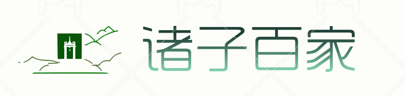
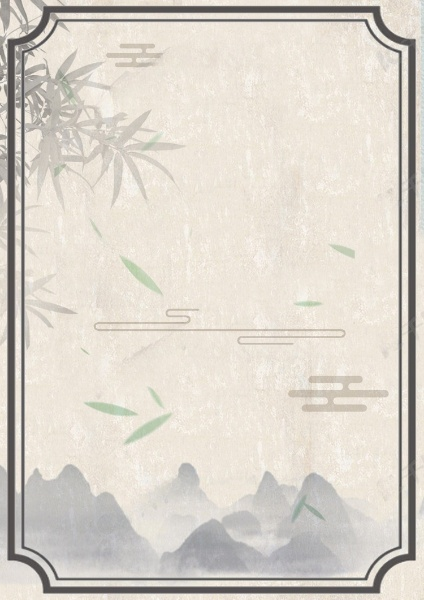
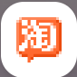
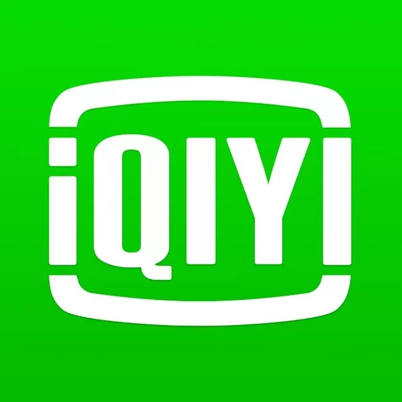
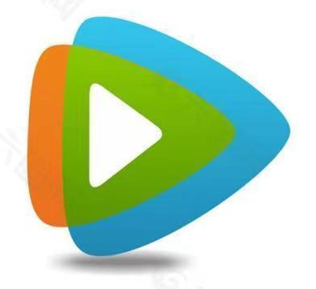
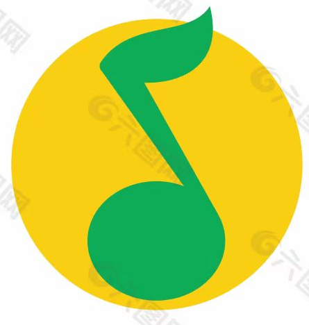
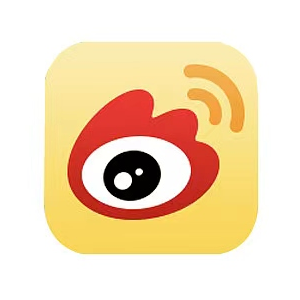
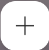

👀

常用应用区
哔哩哔哩

淘宝

爱奇艺

腾讯视频

QQ音乐
Kimi.ai

微博

添加网站
×
网站名称:
网站地址:
添加
其他应用区
音频类
影视类
学习类
购物类
工具类
其他应用
×
影音视听
实用工具
聊天社交
图书阅读
时尚购物
摄影摄像
学习教育
旅行交通
金融理财
新闻资讯
效率办公
影音视听的内容。
这是标签2的内容。
这是标签3的内容。
☰ 更 多